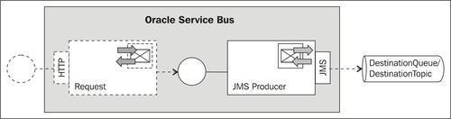
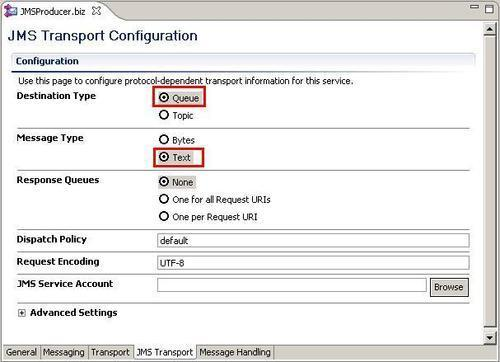
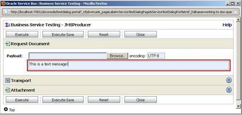
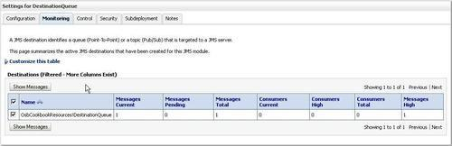
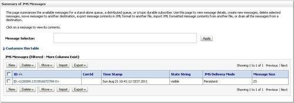
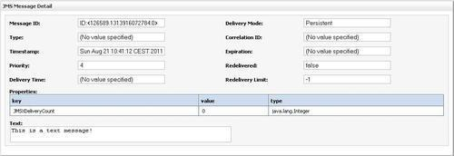
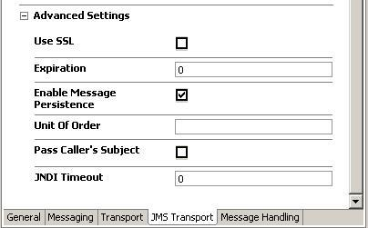
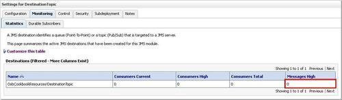
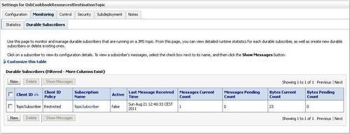
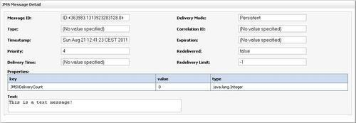

In this recipe, we will create a Business Service which sends a message to either a JMS queue or to a JMS topic. Since writing to a queue and topic is very similar from the business service perspective, we decided to combine it into one single recipe. We will use and configure the JMS Transport provided by the Oracle Service Bus.
For this recipe, we will use the DestinationQueue or the DestinationTopic from the OSB Cookbook standard environment and implement a business service to send messages to the queue/topic. We will not implement the proxy service in this recipe and instead test the business service directly on the OSB console.

First let's create the JMSProducer business service which sends the messages to the DestinationQueue. In the There's more section we will show the necessary changes to send a message to the JMS topic. In Eclipse OEPE, perform the following steps:
writing-to-a-jms-queue and create a business folder within it. JMSProducer. jms://localhost:7001/weblogic.jms.XAConnectionFactory/jms.DestinationQueue into the EndpointURI field and click Add.
This is all what is needed to send a message to a queue.
Let's test the business service. In the OSB console, perform the following steps:

Let's check if the message is in the DestinationQueue by performing the following steps in the WebLogic console:



Configuring a business service with the JMS Transport is enough to send a message from OSB to a JMS queue or topic. The queue or topic can reside on:
We have only configured the business service and tested it through the OSB console. In real life the business service would be called from a proxy service either by a routing or publish action. If there is no need to transform the message, a simple pass-through proxy service is enough, as shown in the Generating a "pass through" proxy service recipe.
This section will first discuss some of the advanced settings on the JMS Transport tab and then discuss the necessary changes to the recipe in order to send to a JMS topic instead of a JMS queue.
There are some advanced settings which can be set on the JMS Transport tab on the business service configuration as shown on the following screenshot:

The option Enable Message Persistence is by default enabled, which guarantees message delivery because the messages persist and will survive server shutdowns and failures. To improve throughput, deselect this option if the occasional loss of a message is tolerable. There is a separate recipe covering this option in the Chapter 10,Reliable Communication with OSB.
Set a time interval in milliseconds in the Expiration field to specify the message time-to-live. After the time-to-live is passed, the message will automatically be treated according to the Expiration Policy defined on the JMS destination (that is, the queue) and either discarded, logged, or redirected to another JMS destination.
The default value of 0 for Expiration means that a message never expires and therefore waits to be consumed forever or until the server is shutdown, if the message is not persistent.
Any JMS destination can override the Expiration set on the business service by setting the Time-to-Live Override setting through the WebLogic console when configuring the JMS destination.
The same steps as shown in the How to do it... section apply for sending to a JMS topic too. To change from the queue to the JMS topic DestinationTopic, make sure to enter jms://localhost:7001/weblogic.jms.XAConnectionFactory/jms.DestinationTopic into the EndpointURI in step 10 and to set the Destination Type option to Topic in step 12. Redeploy the project to the OSB server.
With that the business service will now write to the JMS topic. This can be tested through the OSB console by performing the following steps:
This is a text message! into the Payload field.Let's check if the message is in the DestinationTopic by performing the following steps in the WebLogic console:

Because we don't have any subscribers on the topic, the message is not persisted. So let's add a subscriber to the topic:
TopicSubscriber into the Subscription Name field. TopicSubscriberRetest the business service, and refresh the Durable Subscribers tab.


See the Enabling JMS Message Persistence recipe in Chapter 10, Reliable Communication with the OSB for details of how to enable and use message persistence.